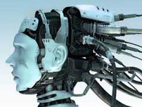

Este tema está dividiendo en dos a los investigadores, expertos y excéntricos de la informática.
Ya que algunos expertos dicen que dentro de poco las máquinas llegarán a superar en muchos aspectos al ser humano, incluso llegando a construir ordenadores y máquinas más rápidas y mejores que las que el propio ser humano es capaz de construir, y que esto será lo que lleve a la humanidad al desarrollo y la mejoría del mundo, en este grupo entra una teoría que afirma que en 2045 ese momento llegará y que el ser humano será capaz de ser inmortal ya que se podrá conectar a un ordenador, lo que le permitirá vivir eternamente. Esto se debe a que la inteligencia neuronal está avanzando a paso agigantados, estos son tan grandes que la tecnología duplica su poder cada 2 años. Uno de los avances en este campo por ejemplo es el del Implante coclear, que mediantes impulsos eléctricos restaura Página 11 un sonido a alguien que tiene problemas auditivos, otro de los avances que están intentando es el de reparar los daños motrices para evitar así daños en la médula espinar o en el sistema nervioso. Tanto han avanzado que están investigando también en el guardado de memoria de las personas, para cambiar los recuerdos de corto plazo en recuerdos de largo plazo, mediante una prótesis conectada a un ordenador.
Aunque dentro de este grupo están también los que dicen que todavía queda mucho para que este acontecimiento llegue, y que estamos aún muy lejos de esa meta.
Pero otro grupo dice que estas máquinas que cada vez son más inteligentes y autónomas, que son capaces de aprender por si solas llegarán al punto de que nos superen y lleguemos a ser nosotros los que seamos controlados por ellos, como si fuésemos sus mascotas, o incluso algo pero, no les sirvamos, en ese caso no se sabe que podría suceder.
